21. trees树(二)¶
Tree queries这部分属于提高组内容，但很值得了解了解。
what is the kth ancestor of a node？
what is the sum of values in the subtree of a node?
what is the sum of values on a path between two nodes?
what is the lowest common ancestor of two nodes?
21.1. Finding ancestors(查找祖先)(倍增)¶
The kth ancestor of a node x in a rooted tree is the node that we will reach if we move k levels up from x. Let ancestor(x,k) denote the kth ancestor of a node x (or 0 if there is no such an ancestor). For example, in the following tree, ancestor(2, 1) = 1 and ancestor(8, 2) = 4.
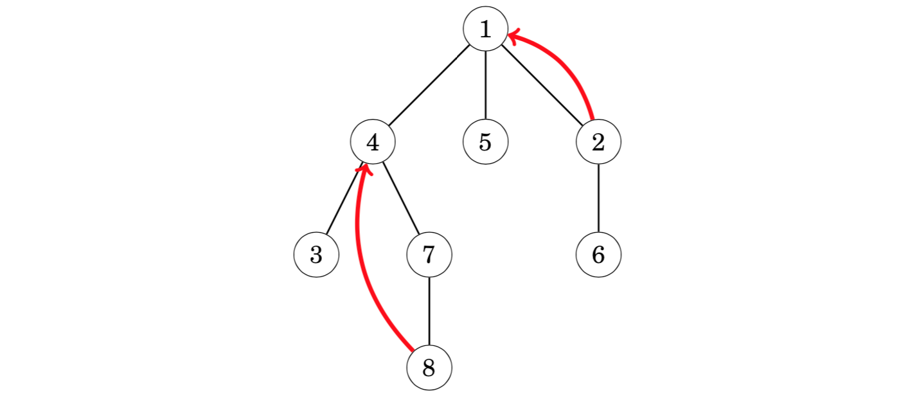
An easy way to calculate any value of ancestor(x,k) is to perform a sequence of k moves in the tree. However, the time complexity of this method is O(k), which may be slow, because a tree of n nodes may have a chain of n nodes.
any value of ancestor(x, k) can be efficiently calculated in O(log k) time after preprocessing. The idea is to precalculate all values ancestor(x, k) where k ≤ n is a power of two. For example, the values for the above tree are as follows:(倍增，类似Successor paths)
The preprocessing takes O(n log n) time, because **O(log n) **values are calculated for each node. After this, any value of ancestor(x,k) can be calculated in O(logk) **time by representing k as a sum where each term is a power of two.
21.2. Subtrees and paths¶
A tree traversal array contains the nodes of a rooted tree in the order in which a depth-first search from the root node visits them.
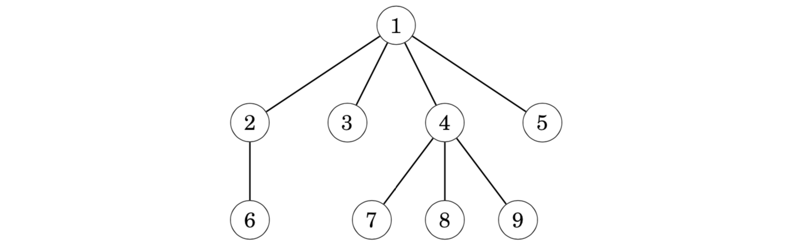
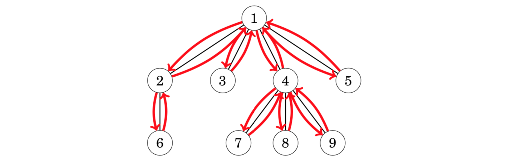
Hence, the corresponding tree traversal array is as follows:
21.2.1. Subtree queries¶
Each subtree of a tree corresponds to a subarray of the tree traversal array such that the first element of the subarray is the root node. For example, the following subarray contains the nodes of the subtree of node 4:
Using this fact, we can efficiently process queries that are related to subtrees of a tree. As an example, consider a problem where each node is assigned a value, and our task is to support the following queries:
update the value of a node
calculate the sum of values in the subtree of a node
Consider the following tree where the blue numbers are the values of the nodes. For example, the sum of the subtree of node 4 is 3+4+3+1=11.
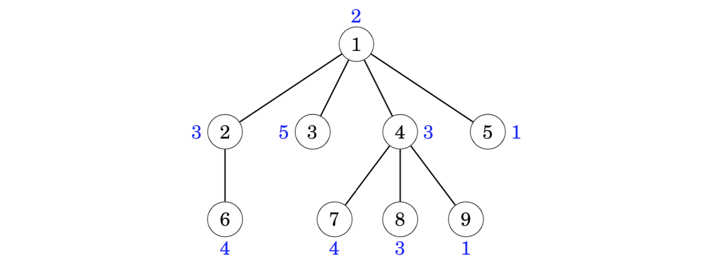
The idea is to construct a tree traversal array that contains three values for each node: the identifier of the node, the size of the subtree, and the value of the node. For example, the array for the above tree is as follows:
Using this array, we can calculate the sum of values in any subtree by first finding out the size of the subtree and then the values of the corresponding nodes. For example, the values in the subtree of node 4 can be found as follows:
To answer the queries efficiently, it suffices to store the values of the nodes in a binary indexed or segment tree. After this, we can both update a value and calculate the sum of values in O(log n) time.
21.2.2. Path queries¶
Using a tree traversal array, we can also efficiently calculate sums of values on paths from the root node to any node of the tree. Consider a problem where our task is to support the following queries:
change the value of a node
calculate the sum of values on a path from the root to a node
For example, in the following tree, the sum of values from the root node to node 7 is 4+5+5=14:
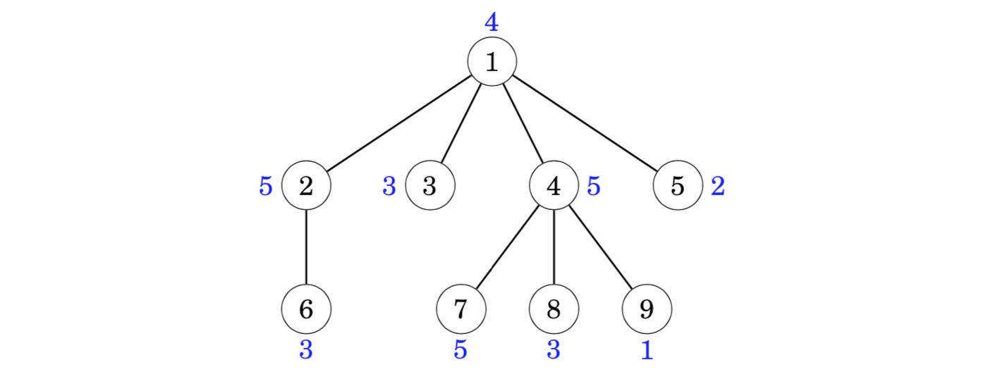
We can solve this problem like before, but now each value in the last row of the array is the sum of values on a path from the root to the node. For example, the following array corresponds to the above tree:
When the value of a node increases by x, the sums of all nodes in its subtree increase by x. For example, if the value of node 4 increases by 1, the array changes as follows:
Thus, to support both the operations, we should be able to increase all values in a range and retrieve a single value. This can be done in O(log n) time using a binary indexed or segment tree.
21.3. Lowest common ancestor最近公共祖先LCA¶
The lowest common ancestor of two nodes of a rooted tree is the lowest node whose subtree contains both the nodes. A typical problem is to efficiently process queries that ask to find the lowest common ancestor of two nodes. 给定一棵有根树，若结点 z 既是结点 x 的祖先，也是结点 y 的祖先，则成 z 是 x, y 的公共祖先。在 x, y 的所有公共祖先中，深度最大的一个称为 x, y 的最近公共祖先，记为LCA(x, y)。 LCA(x, y) 是 x 到根的路径与 y 到根的路径的交汇点，它也是 x 与 y 之间的路径上深度最小的结点。
For example, in the following tree, the lowest common ancestor of nodes 5 and 8 is node 2:
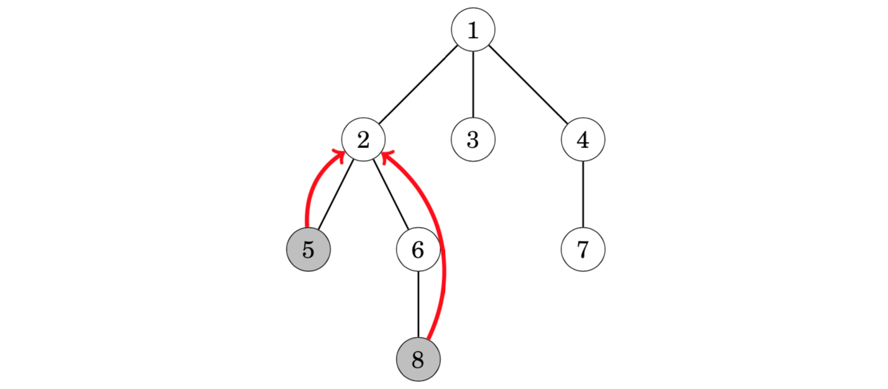
21.3.1. #方法一 向上标记法¶
从 x 向上走到根结点，并标记所有经过的结点。
从 y 向上走到根结点，当第一次遇到已标记的结点时，就找到了 LCA(x, y)。
对于每个询问，向上标记法的时间复杂度最坏为 O(n)
21.3.2. #方法二 树上倍增法¶
One way to solve the problem is to use the fact that we can efficiently find the kth ancestor of any node in the tree. Using this, we can divide the problem of finding the lowest common ancestor into two parts.
We use two pointers that initially point to the two nodes whose lowest common ancestor we should find. First, we move one of the pointers upwards so that both pointers point to nodes at the same level.（假设d[x] >= d[y]，先让x走到与y同一深度。若此时x == y，说明已经找到了LCA，LCA就是y）
In the example scenario, we move the second pointer one level up so that it points to node 6 which is at the same level with node 5:
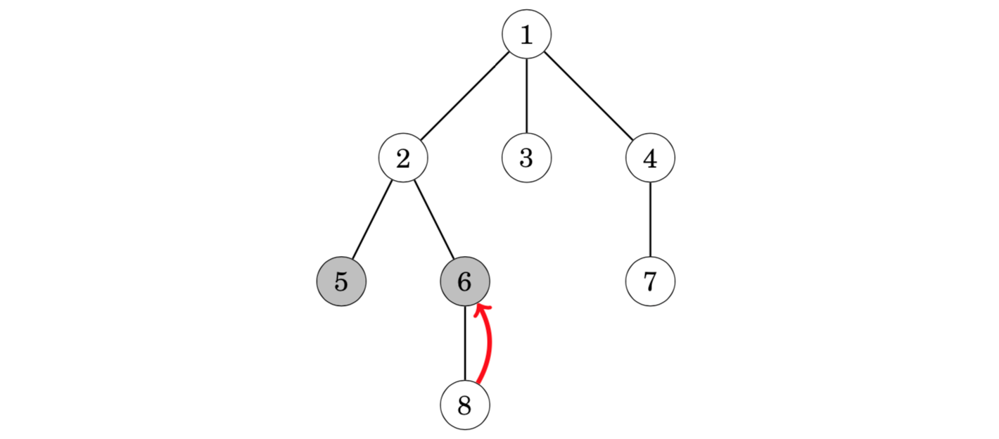
After this, we determine the minimum number of steps needed to move both pointers upwards so that they will point to the same node. The node to which the pointers point after this is the lowest common ancestor.(用二进制拆分思想，x 和 y 一起往上跳，保持深度一致，且二者不相会。此时，x, y 必定只差一步就相会了，它们的父结点 F[x, 0] 就是 LCA)
In the example scenario, it suffices to move both pointers one step upwards to node 2, which is the lowest common ancestor:
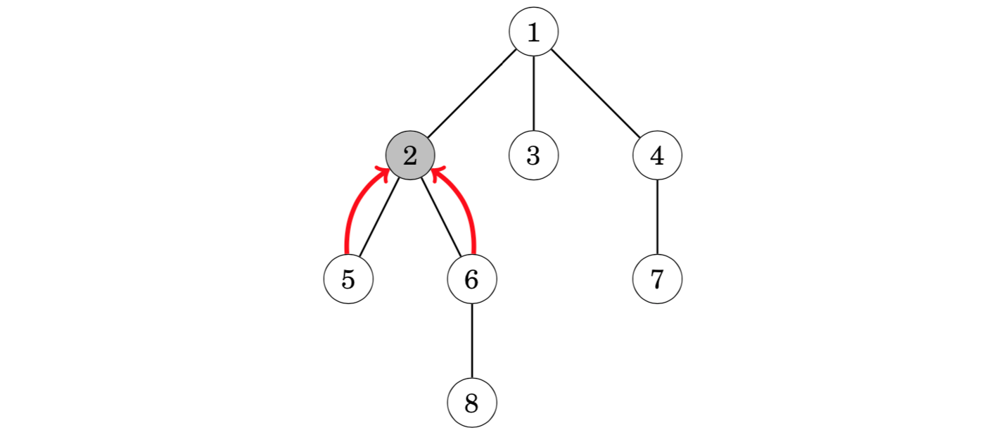
Since both parts of the algorithm can be performed in O(logn)** time using precomputed information, we can find the lowest common ancestor of any two nodes in O(log n) time.
21.3.3. #方法三 Euler tour technique欧拉序列¶
Another way to solve the problem is based on a tree traversal array. Once again, the idea is to traverse the nodes using a depth-first search:
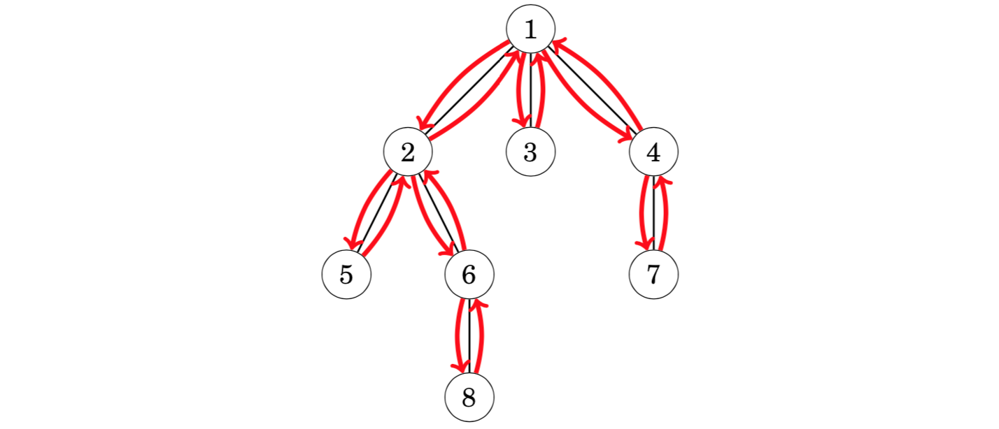
However, we use a different tree traversal array than before: we add each node to the array always when the depth-first search walks through the node, and not only at the first visit. Hence, a node that has k children appears k + 1 times in the array and there are a total of 2n − 1 nodes in the array.
We store two values in the array: the identifier of the node and the depth of the node in the tree. The following array corresponds to the above tree:
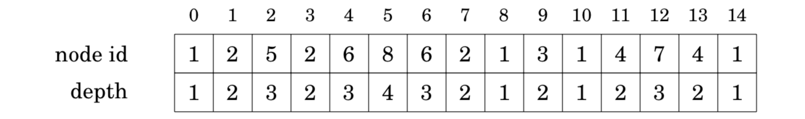
Now we can find the lowest common ancestor of nodes a and b by finding the node with the minimum depth between nodes a and b in the array. For example, the lowest common ancestor of nodes 5 and 8 can be found as follows:
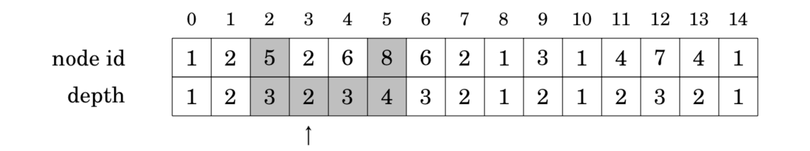
Node 5 is at position 2, node 8 is at position 5, and the node with minimum depth between positions 2…5 is node 2 at position 3 whose depth is 2. Thus, the lowest common ancestor of nodes 5 and 8 is node 2.
Thus, to find the lowest common ancestor of two nodes it suffices to process a range minimum query. Since the array is static, we can process such queries in O(1) time after an O(n log n) time preprocessing.
21.3.4. #方法四 Tarjan算法¶
There is also an offline algorithm for processing a set of lowest common ancestor queries. The algorithm is based on the union-find data structure, and the benefit of the algorithm is that it is easier to implement than the algorithms discussed earlier in this chapter.
The algorithm is given as input a set of pairs of nodes, and it determines for each such pair the lowest common ancestor of the nodes. The algorithm performs a depth-first tree traversal and maintains disjoint sets of nodes. Initially, each node belongs to a separate set. For each set, we also store the highest node in the tree that belongs to the set.
When the algorithm visits a node x, it goes through all nodes y such that the lowest common ancestor of x and y has to be found. If y has already been visited, the algorithm reports that the lowest common ancestor of x and y is the highest node in the set of y. Then, after processing node x, the algorithm joins the sets of x and its parent.(时间复杂度O(n + m))
For example, suppose that we want to find the lowest common ancestors of node pairs (5,8) and (2,7) in the following tree:
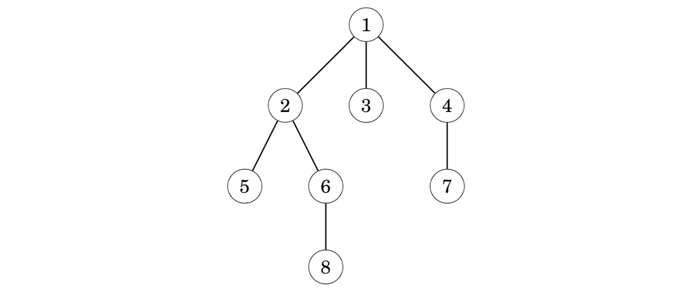
In the following trees, gray nodes denote visited nodes and dashed groups of nodes belong to the same set. When the algorithm visits node 8, it notices that node 5 has been visited and the highest node in its set is 2. Thus, the lowest common ancestor of nodes 5 and 8 is 2:
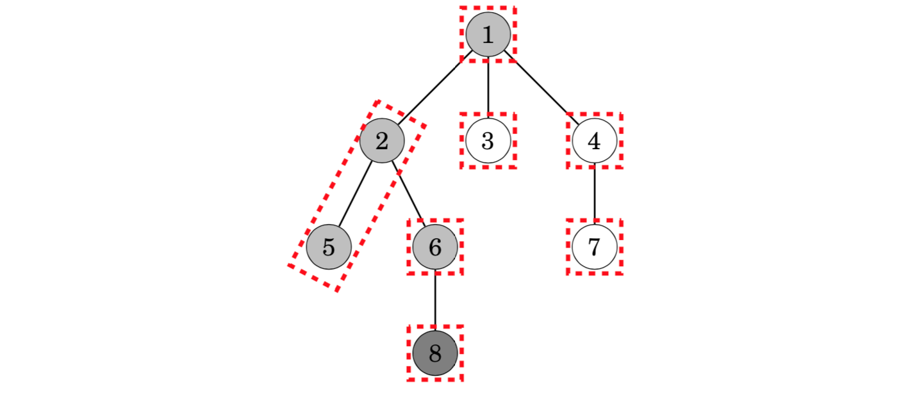
Later, when visiting node 7, the algorithm determines that the lowest common ancestor of nodes 2 and 7 is 1:
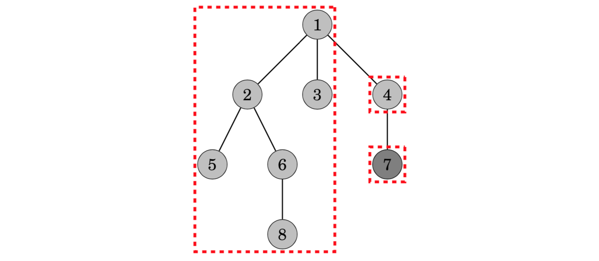
(具体再参考一下《进阶指南》P377，我感觉英文的更好理解这个过程，中文的更落脚于实现上)
Distances of nodes结点之间的距离(应用)
The distance between nodes a and b equals the length of the path from a to b. It turns out that the problem of calculating the distance between nodes reduces to finding their lowest common ancestor.
First, we root the tree arbitrarily. After this, the distance of nodes a and b can be calculated using the formula where c is the lowest common ancestor of a and b and depth(s) denotes the depth of node s.
For example, consider the distance of nodes 5 and 8, The lowest common ancestor of nodes 5 and 8 is node 2. The depths of the nodes are depth(5) = 3, depth(8) = 4 and depth(2) = 2, so the distance between nodes 5 and 8 is 3+4−2·2=3.
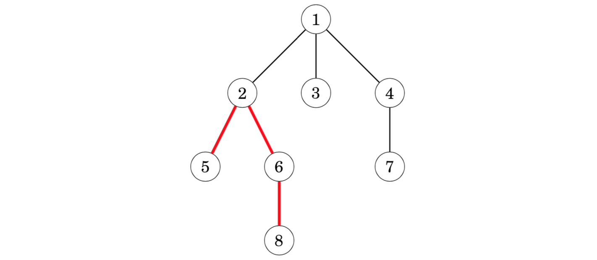